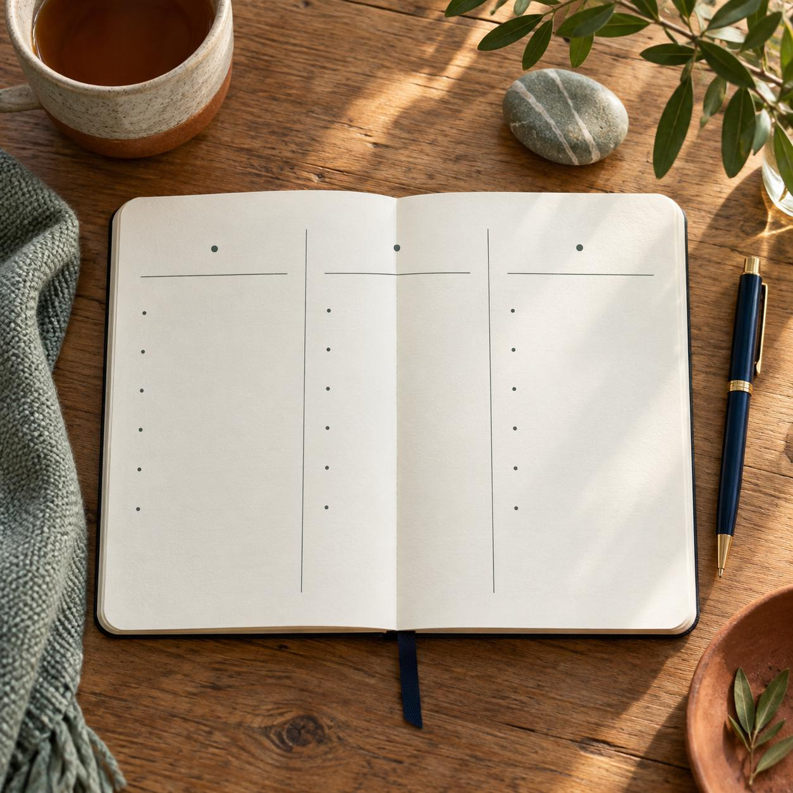
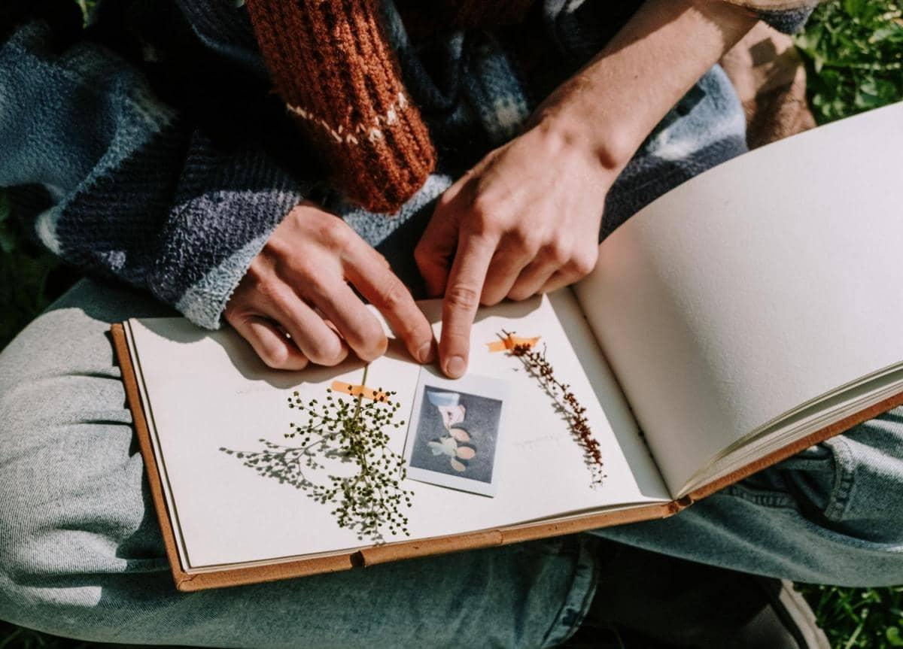
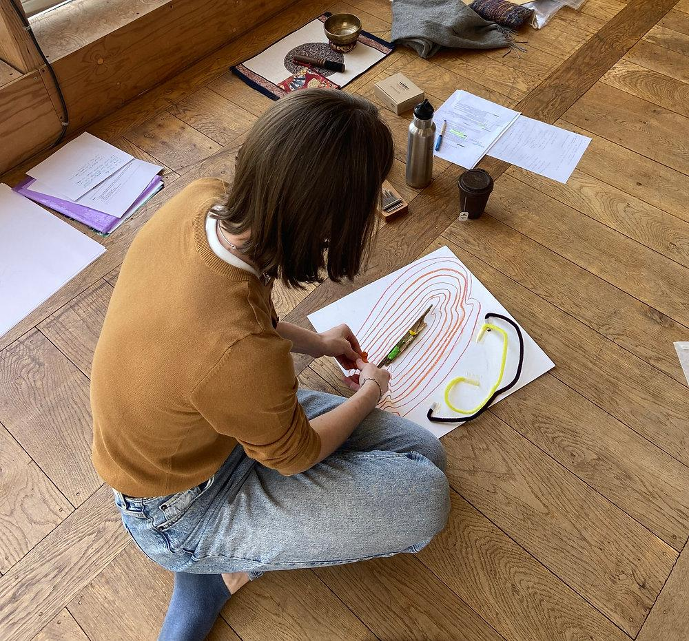

Пространство, чтобы снова услышать собственные желания.
Пространство, чтобы снова услышать собственные желания. Здесь можно двигаться в собственном темпе, обращаясь к материалам и поддержке тогда, когда это нужно.
Иногда мы так долго живём среди чужих ожиданий, обязанностей и решений, которые необходимо принимать, что постепенно перестаём слышать себя.
Мы знаем, что нужно сделать сегодня. Помним, кому позвонить, о ком позаботиться, что закончить и куда успеть. Но на простой вопрос «А чего я хочу?» вдруг оказывается трудно ответить.
И дело не обязательно в том, что у нас нет желаний. Иногда им просто давно не находилось места.
Этот маршрут — приглашение немного замедлиться. Не для того, чтобы срочно найти своё предназначение, изменить жизнь или стать другой версией себя. А чтобы снова начать замечать: что мне нравится, что меня утомляет, что вызывает любопытство, где я чувствую свободу, а где живу по привычке.
Здесь не нужно заранее знать, куда идти. Можно начать с того, чтобы заметить, где ты сейчас.
Три способа исследовать свои желания через наблюдение, слова и творчество. Выбери то, что откликается сегодня. Не обязательно проходить всё по порядку.

Какая колонка оказалась самой длинной? Что удивило? Есть ли что-то, что я называю обязанностью, хотя когда-то выбрал это сам?

К чему я возвращаюсь взглядом? Что хочется повторить? Есть ли в моей коллекции что-то, чему я давно не давал места?
Это ознакомительное описание. Утверждённая полная авторская версия практики «Коллекция маленьких открытий» остаётся без изменений и может быть добавлена отдельно.

Что здесь принадлежит только мне? Кого я хочу пригласить, а кому пока не готов открыть дверь? Какую маленькую часть этого пространства я могу создать в своей повседневности?
Иногда бывает трудно отличить собственные желания от ожиданий окружающих. Особенно если долго приходилось быть сильной, ответственной, удобной или заботиться прежде всего о других.
На индивидуальных встречах с психологом можно исследовать эти переживания в собственном темпе — через разговор, образы, рисунок и другие способы самовыражения. Не обязательно приходить с чётко сформулированным запросом. Иногда достаточно слов: «Я больше не понимаю, чего хочу».
Познакомиться со специалистами →
Пространство для исследования своих желаний, границ, ценностей и новых возможностей через творчество. Здесь не требуется умение рисовать. Важно не качество созданной работы, а то, что человек может обнаружить в процессе.
Идея будущей программы; запись пока не открыта.
Подробнее о группах →Эта заметка остаётся только в твоём браузере до закрытия страницы. При желании сохрани её отдельным текстовым файлом.
«Не обязательно знать, куда ведёт дорога. Иногда достаточно почувствовать, что следующий шаг — твой».